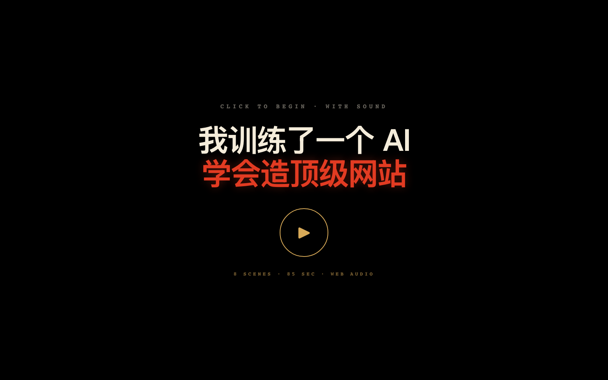
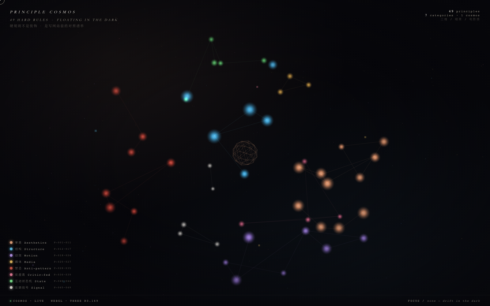
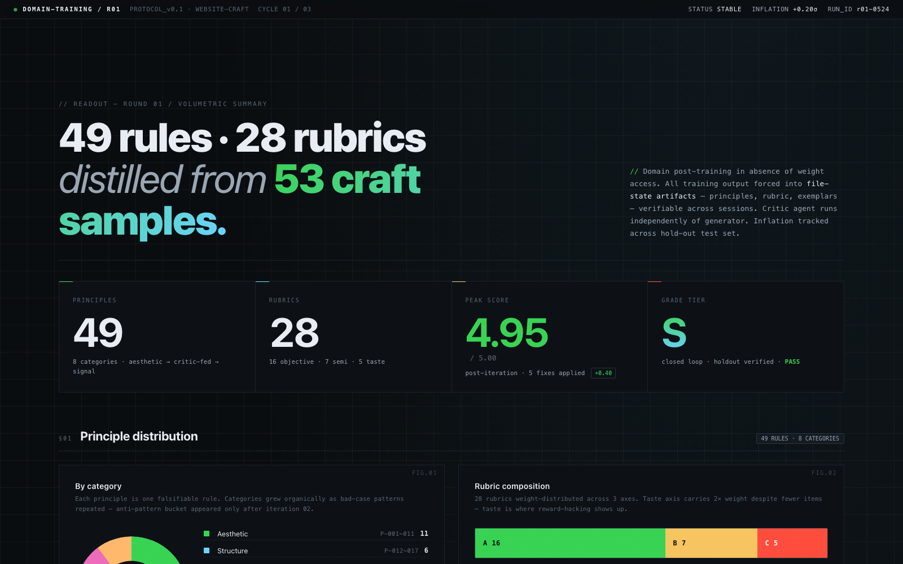
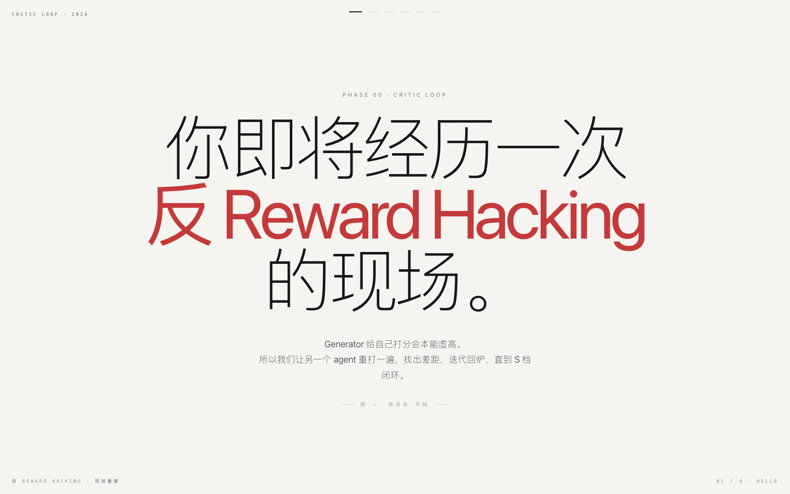
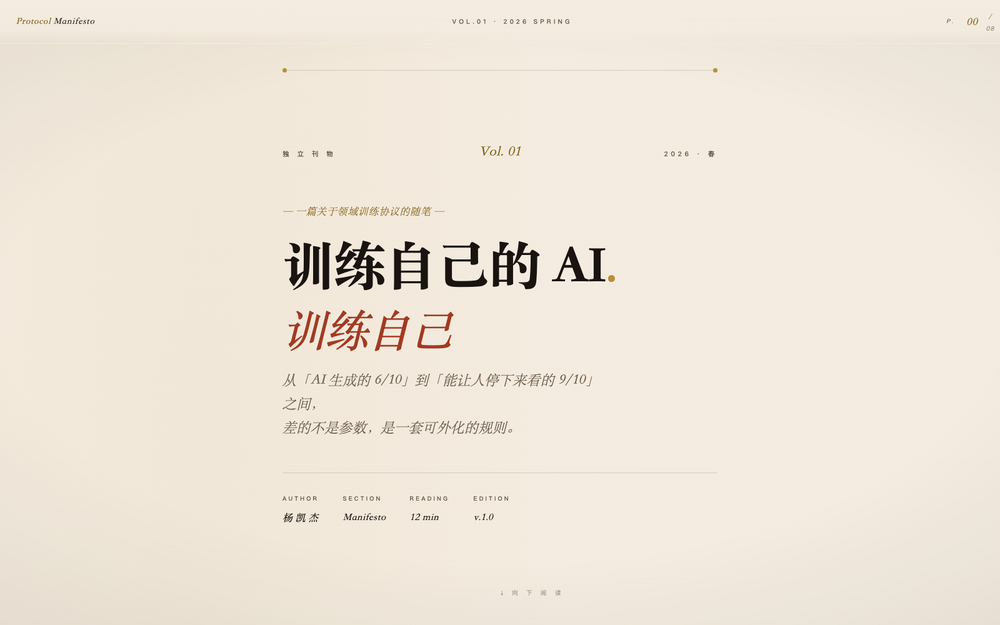

把你想说的事丢进来，带上你自己的 Anthropic API key， 几分钟后下载一个能直接打开、能塞进微信发给任何人的 单文件 HTML。 数据不离开这台浏览器。
以下网站都是用上面这个工具（Try It）生成的。
点开看完整效果。

8 幕 Web Audio BGM，全程不需要 mp3 资源。

鼠标拖拽 / 滚轮缩放 / 49 个点位 hover 点亮。

7 张图：KPI / 环形 / stacked bar / 曲线。

键盘 → 推进 / 6 phase 状态机 / 程序合成音。

三字体 + 首字下沉 + sticky 章节 / 杂志感。
与其训练自己
成为某个产品的用户，
不如训练 AI
成为自己的协作者。
住在上海。一台 M 系列 Mac 当作整个工作室。
相信好产品来自 反复跟自己较劲，不是来自更多功能。
微信 — China_ElonMusk
加我备注「ip-website」，合作 / 接单 / 闲聊都行。
项目仓库 — github.com/kaijie0074-art/ip-website-studio
觉得这个工具对你有帮助？点个 ⭐ Star，给我点反馈的勇气。